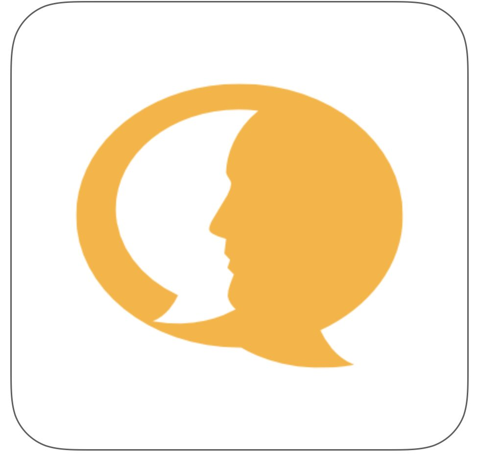
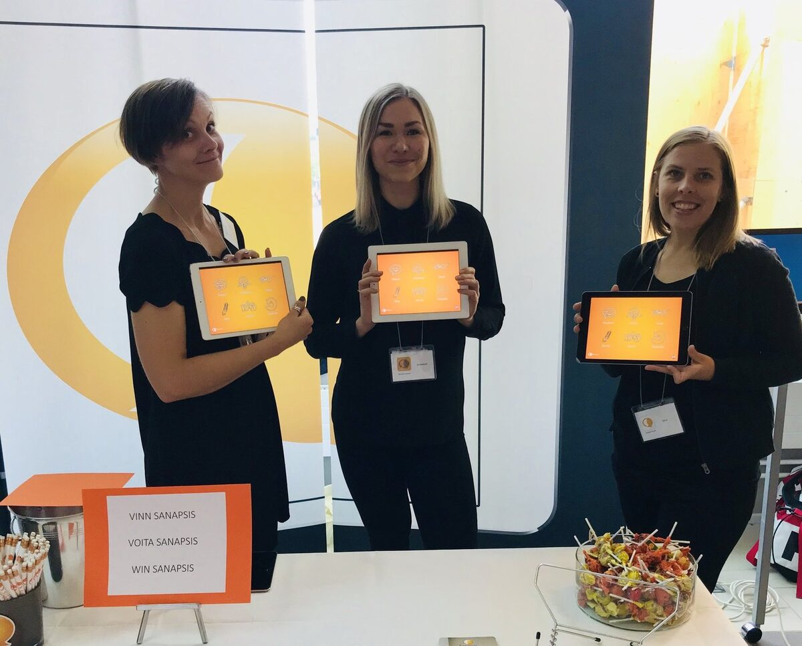

Now that we have three language versions of Sanapsis, we thought it would be fun to have three different icons to display at AppStore and on your iPad. We are still in love with our color-scheme (orange, gray and white) and decided to keep things in line with that. As we also want to avoid getting mixed up with language learning apps *think flags for languages* so sticking to our trio was the obvious solution. All our apps are a collaboration of our trilingual team. However, we do play favorites..
Sanapsis
Meet Sanapsis, our original English version. You could think of it as our firstborn (twin A) if you were so inclined. This one has seen a lot of testing under different circumstances and has held up rather nicely! Plays well with others and is currently under supervision of main designer, SLP Nana.

Sanapsis Suomi
This is our twin B, Sanapsis Suomi (Finnish). This one is the one we have most direct patient feedback on and we are oh, so grateful to everybody who has been a part of bringing it to life. At the moment this one is being polished and made better mostly by our fantastic SLP Elina.
Sanapsis Svenska
Our baby! Sanapsis Svenska (Swedish) is our latest localization and we are so exited to see it getting better with each update. First release gave you the basics and new releases will always free, as with all versions. Our Swedish version has been brought to life mostly by our talented SLP Annemari with the help of many speech language pathology students at Åbo Akademi in Turku, Finland.

Our team of SLPs (Nana, Annemari and Elina) showing off their favorites at NAC2019 (June 2019).